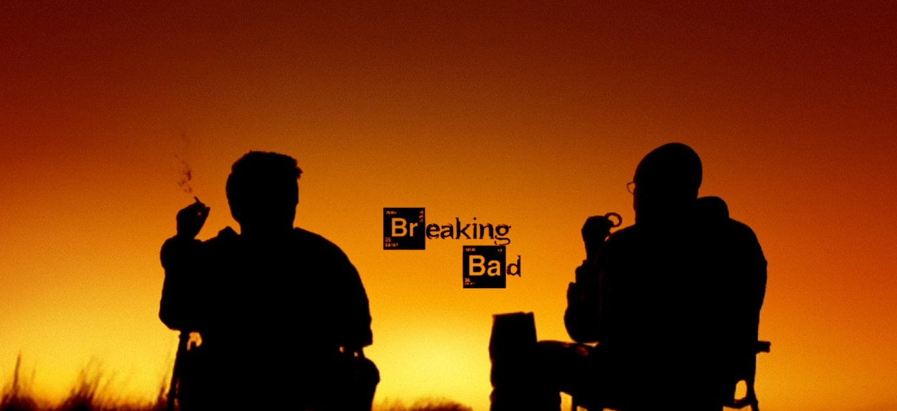

Breaking Bad
"Breaking Bad" is an American television series that originally aired on AMC from January 20, 2008, to September 29, 2013. Created by Vince Gilligan, the show consists of five seasons with a total of 62 episodes. The series received critical acclaim and is often regarded as one of the greatest television shows of all time.